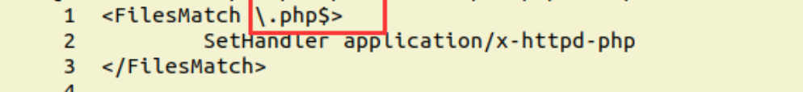
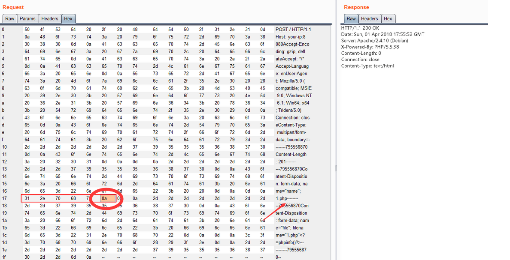
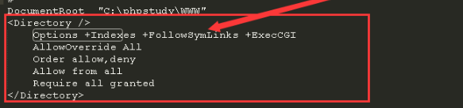
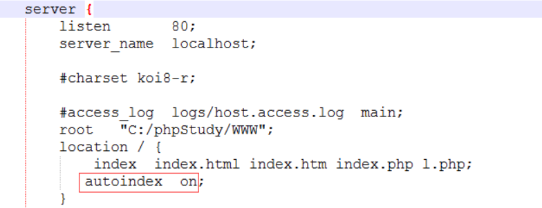
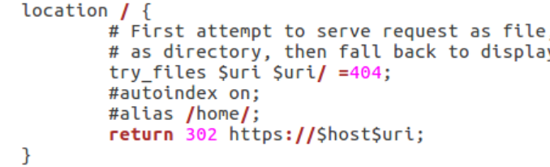

Apache换行解析漏洞CVE-2017-15715
2.4.0~2.4.29版本中存在一个解析漏洞，在解析PHP时，1.php\x0A将被按照PHP后缀进行解析，导致绕过一些服务器的安全策略。
apache这次解析漏洞的根本原因就是这个 $
匹配输入字符串的结尾位置。如果设置了 RegExp 对象的 Multiline 属性，则 $ 也匹配 ‘\n’ 或 ‘\r’。要匹配 $ 字符本身，请使用 $。
查看php.conf文件。下图1到3行FileMatch的内容是将以.php结尾的文件都进行php解析，而$符号会匹配换行符
\ .php$ 中的$ 表示配置匹配后缀名文件的防盗链,而这个解析漏洞根本原因就是$ 这个符号，这个符号在正则表达式中是匹配字符串中结尾的位置，也就是说可以利用换行符使$ 与其匹配从而绕过黑名单机制实现文件上传，验证逻辑又是先会对上传的文件正则匹配验证后缀名是否包含了php,因为解析漏洞的存在，这里不会过滤php%0a,后续的黑名单机制也就如同摆设了
上传一个名为haha.php的文件，在haha.php后面插入一个\x0A（注意，不能是\x0D\x0A，只能是一个\x0A），即可上传成功
Apache解析漏洞
漏洞原理
Apache文件解析漏洞与用户的配置有密切的关系，严格来说属于用户配置问题。
Apache 解析文件的规则是从右到左开始判断解析,如果后缀名为不可识别文件解析,就再往左判断。比如 test.php.owf.rar “.owf”和”.rar” 这两种后缀是apache不可识别解析,apache就会把wooyun.php.owf.rar解析成php。
查看php7.3.conf文件，第一行就告诉了我们apache会将那些后缀的文件当做php解析
<FilesMatch ".+\.ph(ar|p|tml)$">根据上面正则表示，当如下结尾的文件会被apache当做php解析
phar
php
phtml其余配置问题导致漏洞
（1）如果在 Apache 的 conf 里有这样一行配置 AddHandler php5-script .php 这时只要文件名里包含.php 即使文件名是 test2.php.jpg 也会以 php 来执行。
（2）如果在 Apache 的 conf 里有这样一行配置 AddType application/x-httpd-php .jpg 即使扩展名是 jpg，一样能以 php 方式执行。
漏洞防御
1、修改Apache的主配置文件：httpd.conf
对apache的配置文件做适当修改，在文件中添加下面几行代码
<FilesMatch ".(php.|php3.|php4.|php5.)">
*****
</FilesMatch>2、禁止.php.文件的访问权限
Apache-目录遍历漏洞
目录遍历漏洞原理比较简单，就是程序在实现上没有充分过滤用户输入的../之类的目录跳转符，导致恶意用户可以通过提交目录跳转来遍历服务器上的任意文件。这里的目录跳转符可以是../，也可是../的ASCII编码或者unicode编码等。
目录遍历的标志：Index of /
在漏洞挖掘或者渗透测试的过程中使用Google语法能够很有效帮助我们寻找目录遍历漏洞
intitle:index of
打开httpd.conf查看配置文件
修复也很简单：
将+indexes修改为-indexes

Nginx 任意解析漏洞
漏洞简介：
对于任意文件名，在后面添加 /xxx.php后，即可作为php解析。
该漏洞是Nginx配置所导致，与版本无关。
修复建议：
1.配置cgi.fix_pathinfo(php.ini中)为0并重启php-cgi程序。
2.如果需要cgi.fix_pathinfo的特性（如Wordpress），可以禁止上传目录的执行脚本权限。或站库分离。
3.高版本PHP提供了security.limit_extensions这个配置参数，设置security.limit_extensions= .php
CGI：
CGI是规定web server传递过来的数据是何种标准格式，简单说就是一个协议。web server(例如nginx)只是内容的分发者。比如：
1) 如果请求/index.html，那么web server会去文件系统中找到这个文件，发送给浏览器，这里分发的是静态数据
2) 如果请求的是/index.php，根据配置文件，nginx知道这个不是静态文件，需要去找PHP解析器来处理，那么他会把这个请求简单处理后交给PHP解析器
问题的核心在于Nginx需要传哪些数据给PHP解析器呢，例如：
1) url
2) 查询字符串
3) POST数据
4) HTTP header
...所以，CGI本质上就是规定要传哪些数据、以什么样的格式传递给后方处理这个请求的协议。
FastCGI：
FastCGI只是优化了CGI程序的性能
首先，
Fastcgi会先启一个master，解析配置文件，初始化执行环境然后再启动多个
worker当请求过来时，
master会传递给一个worker，然后立即可以接受下一个请求。这样就避免了重复的劳动，效率提高了而且当
worker不够用时，master可以根据配置预先启动几个worker等着，同时如果发现空闲worker太多时，也会停掉一些，这样就提高了性能，也节约了资源
漏洞分析：
nginx默认以cgi的方式支持php的运行，在配置文件中如下配置:
location ~ .php$
{
root html;
fastcgi_pass 127.0.0.1:9000;
fastcgi_index index.php;
fastcgi_param SCRIPT_FILENAME /scripts$fastcgi_script_name;
include fastcgi_params;
}配置参数说明如下
- location对请求进行选择的时候会使用URI环境变量进行选择
- 其中传递到后端
Fastcgi的关键变量SCRIPT_FILENAME由nginx生成的$fastcgi_script_name决定- 而通过分析可以看到
$fastcgi_script_name是直接由URI环境变量控制的- 这里就是产生问题的点。而为了较好的支持
PATH_INFO的提取，在PHP的配置选项里存在cgi.fix_pathinfo选项，其目的是为了从SCRIPT_FILENAME里取出真正的脚本名我们来假设一个攻击场景:
- 假设存在一个URL:
http://localhost/test/test.jpg- 我们以如下的方式去访问:
http://localhost/test/test.jpg/test.phpnginx将会得到一个URI:/test.jpg/test.php- 经过
location指令，该请求将会交给后端的fastcgi处理，nginx为其设置环境变量SCRIPT_FILENAME，内容为:/scripts/test.jpg/test.php- 后端的
fastcgi在接受到该选项时，会根据fix_pathinfo配置决定是否对SCRIPT_FILENAME进行额外的处理，一般情况下如果不对fix_pathinfo进行设置将影响使用PATH_INFO进行路由选择的应用，所以该选项一般配置开启。php通过该选项之后将查找其中真正的脚本文件名字，查找的方式也是查看文件是否存在，这个时候将分离出SCRIPT_FILENAME和PATH_INFO分别为
SCRIPT_FILENAME: /scripts/test.jpgPATH_INFO: test.php
- 最后，以
/scripts/test.jpg作为此次请求需要执行的脚本，而nginx会使用php解析器来处理这个jpg文件，攻击者就可以实现让nginx以php来解析任何类型的文件了
所以，漏洞的本质实际上就是由于fcgi和web server对script路径级参数的理解不同出现的问题，这是典型的因为跨系统语境不同导致对同一个请求的不同解释导致的漏洞。
Nginx目录遍历
漏洞简介：
与Apache一样属于配置所导致的问题。
打开nginx.conf配置文件
Nginx空字节任意代码执行漏洞
影响范围：
nginx 0.5.*
nginx 0.6.*
nginx 0.7 <= 0.7.65
nginx 0.8 <= 0.8.37漏洞描述:
Ngnix在遇到%00空字节时与后端FastCGI处理不一致，导致可以在图片中嵌入PHP代码然后通过访问xxx.jpg%00.php来执行其中的代码
你可以上传/test.jpg/x.php文件，可以作为php文件进行解析
临时解决方案是：
if ( $fastcgi_script_name ~ \..*\/.*php ) {
return 403;
}而新漏洞的利用方式是：/test.jpg%00.php
对应fastcgi_script_name的匹配正则。
该漏洞不受cgi.fix_pathinfo影响，其为0也能解析。
nginx CRLF(换行回车)注入漏洞
CRLF是”回车 + 换行”（\r\n）的简称。在HTTP协议中，HTTP Header与HTTP Body是用两个CRLF分隔的，浏览器就是根据这两个CRLF来取出HTTP 内容并显示出来。所以，一旦我们能够控制HTTP 消息头中的字符，注入一些恶意的换行，这样我们就能注入一些会话Cookie或者HTML代码，所以CRLF Injection又叫HTTP Response Splitting，简称HRS。
HRS是比XSS危害更大的安全问题，具体是为什么，我们往下看。
对于HRS最简单的利用方式是注入两个\r\n，之后在写入XSS代码，来构造一个xss。
举个例子，一般网站会在HTTP头中用Location: http://baidu.com这种方式来进行302跳转，所以我们能控制的内容就是Location:后面的XXX某个网址。
所以一个正常的302跳转包是这样：
HTTP/1.1 302 Moved Temporarily
Content-Type: text/html
Content-Length: 154
Connection: close
Location: http://www.sina.com.cn但如果我们输入的是
http://www.sina.com.cn%0aSet-cookie:JSPSESSID%3Dwooyun注入了一个换行，此时的返回包就会变成这样：
HTTP/1.1 302 Moved Temporarily
Content-Type: text/html
Content-Length: 154
Connection: close
Location: http://www.sina.com.cn
Set-cookie: JSPSESSID=wooyun这个时候这样我们就给访问者设置了一个SESSION，造成一个“会话固定漏洞”。
当然，HRS并不仅限于会话固定，通过注入两个CRLF就能造成一个无视浏览器Filter的反射型XSS。
比如一个网站接受url参数http://test.sina.com.cn/?url=xxx，xxx放在Location后面作为一个跳转。如果我们输入的是：
http://test.sina.com.cn/?url=%0d%0a%0d%0a<img src=1 onerror=alert(/xss/)>我们的返回包就会变成这样：
HTTP/1.1 302 Moved Temporarily
Content-Type: text/html
Content-Length: 154
Connection: close
Location:
<img src=1 onerror=alert(/xss/)>如何修复HRS漏洞，当然是过滤\r 、\n之类的换行符，避免输入的数据污染到其他HTTP头。
Nginx的CRLF注入漏洞
在nginx的配置文件的如下位置中，加上一句return 302 https://$host$url
这句话的意思是，在用nginx访问一个链接时，会用https协议访问，并且返回一个302found给用户。
其中的$url是我们可以控制的，通过注入一个CRLF和两个CRLF来选择注入到http header还是http body。
漏洞修复：
删除此配置